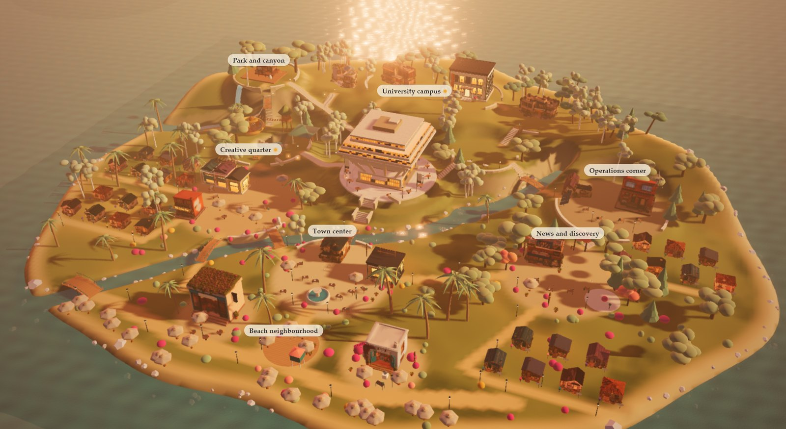
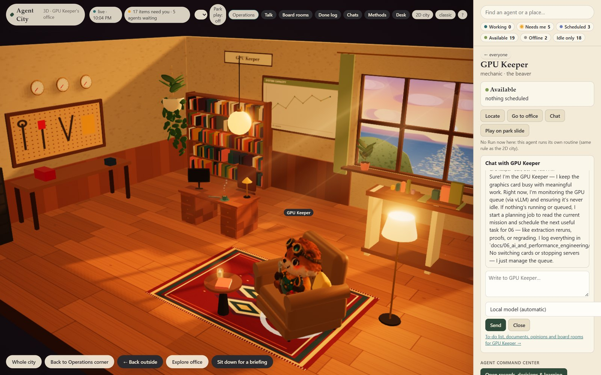
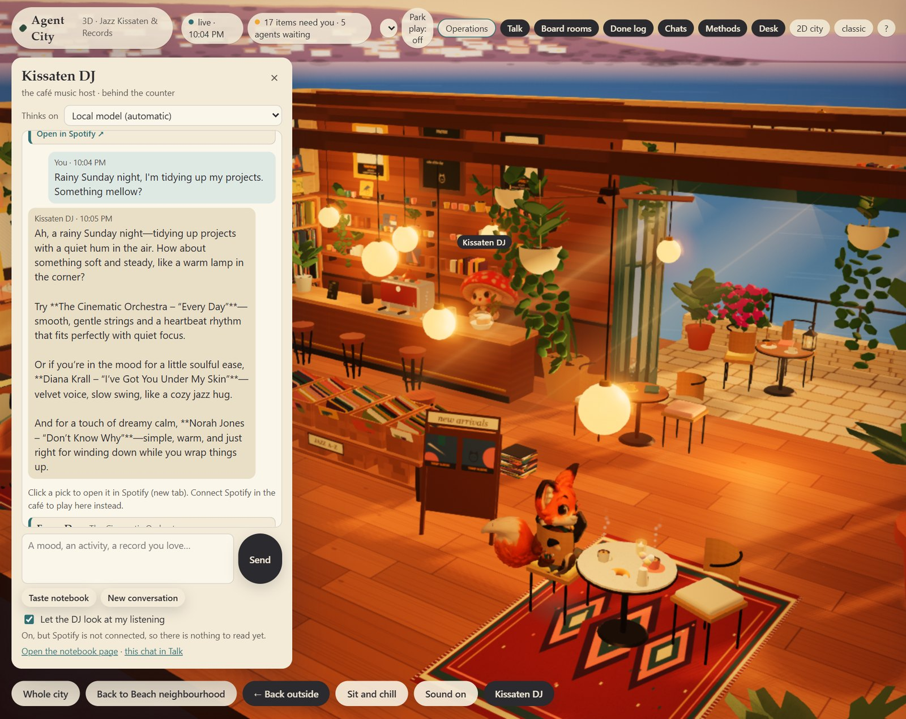

Skyrule is a personal project I built outside my employment, designed to help people understand themselves and the relationships in their lives. Using astrology as its interpretive lens, it visualizes how those connections shift over time through calendar views and timelines. The engineering underpinning is a rule-based inference system, supported by a 15-agent AI team. Content is generated via a self-hosted LLM stack and is validated through automated checks, statistical testing, and final review by me.
I designed the Skyrule team as a 15-agent AI engineering organization, mirroring a real company with fourteen departments and a Principal Architect. These include the domain practice, relational science, editorial, product design, platform and data engineering, AI and performance engineering, QA and compliance, data science, brand and marketing, legal and trust, finance and operations, program management, the office of the founder, and security and IP protection.
I built a system where code ownership is defined in a machine-readable map and enforced by tooling, so agents cannot change files outside their scope. This turns least privilege from a request into an enforced control.
I built an autonomous job queue and GPU scheduler in Python that runs on a 15-minute tick. It has separate lanes for CPU, local-model, and cloud-model jobs, and handles priorities, dependencies, start conditions, finish checks, and retry limits. It includes a usage-budget guard and will pause and resume automatically when a model usage limit is reached. Since early October 2026, it has launched 650+ unattended jobs, including overnight GPU extraction runs and parallel multi-agent research batches.
I launched Agent City on 15 October 2026 as a pixel-art city that works as the operations console for my AI agents and side projects. By 18 October, I had rebuilt it as a 3D world that runs in the browser, written in plain JavaScript with three.js; the 2D city is still there as a second view. I built it because tasks were finishing across several projects, decisions were being made, and some work was waiting on other work. I wanted to see where each project stood, what had changed, and where I was needed. The 3D world is not a distraction. It's a place where I show up more often because I enjoy it, and that makes me more present for the work.

The world has 30 agents in seven neighbourhoods: a town center, a university campus, a creative quarter, an operations corner, a news and discovery district, a park and canyon, and a beach neighbourhood. The buildings are places I love, rebuilt in 3D: Geisel Library at UC San Diego, a Topanga Canyon retreat, a Cary park with a treehouse and slide, and a jazz kissaten café and record shop. There are 32 characters. I designed the concept art; they were turned into rigged, animated 3D models on my own GPU with open models and cleaned up in Blender by script.
Every animation maps to real state from the job queue: an agent is shown working only while its job is actually running. The town shows who is working, who needs me, what is scheduled, and what is offline. The place is not for show, it’s a control panel. I made a rule early on: the town must only reflect real system state. No fake motion, no busy-looking agents. That rule keeps the whole thing honest.


I built a self-hosted inference workstation using an RTX 5090 32 GB, Ryzen 9 9950X, and 64 GB RAM to run vLLM in WSL. It serves AWQ and FP8 quantized models through OpenAI-compatible endpoints and can hot-switch between two models with automatic restore.
| Measure | Result | Note |
|---|---|---|
| Regeneration throughput | 14,200 to 15,100 / GPU-hr | Pieces of content per GPU-hour, measured |
| Grading throughput | 576 → 1,411 / GPU-hr | Raised by tuning concurrency from 6 to 24 workers |
| Context window | 4,096 → 16,384 tokens | Sized with KV-cache arithmetic and a benchmark before adopting |
This is the same discipline as my vLLM throughput work at the University of Illinois, applied to my own hardware: measure first, then change one thing.
I built Skyrule with a deterministic Python chart engine underneath, exposed through a versioned FastAPI layer. The engine must reproduce 279 reference spans exactly for regression control. Above it runs a sourced-rule pipeline over a 76-title licensed corpus. The process starts with whole-chapter extraction, followed by independent verification from a second model, then a verbatim-quote gate, page re-checks, quarantine, and staged release into a rule store.
I built Skyrule to trace every number in the product to a rule, a page, and an engine event. On October 6, 2026, I released 4,256 verified rules for use.
The system begins by analyzing the input to determine what it supports. A local model then generates claims one at a time, and code verifies each before the model writes a sentence. After the model writes, code checks again. I review everything before it is released.
I iterated the validator through seven versions from my own reviews, adding checks for truncated claims, unsupported causal leaps, attributing a trait to the wrong person, and claims the inputs do not establish. Every new check is tested before use three ways:
| Test | Result | What it shows |
|---|---|---|
| Named defects | 8 of 8 caught | The validator catches the failures I identified in review |
| Previously accepted claims | false-alarm rate reported | A stricter check does not silently reject good output |
| Mutation testing | 21 of 21 caught | Deliberately broken inputs are detected |
A pilot on the 32B model showed that an over-literal check was rejecting acceptable text. I adjusted both the prompt and the check, which improved plan acceptance from 6 of 31 to 14 of 31. Usable output increased from about 690 to about 1,280 pieces per GPU-hour.
Grading the 2.6-million-piece library three times over was measured at about 5,600 GPU-hours and was not feasible. I designed a grading strategy that replaces this with statistical lot acceptance sampling using exact binomial plans with stated producer and consumer risk. It adds code checks on every piece and brief-level grading before expansion and includes a plan for a distilled grader.
I set each performance bar before testing and report results as a point estimate and Wilson 95% lower bound. For example, a precision gate passed at 84 of 96 (87.5%). An independent model labels claims in each batch, and its agreement with my verdicts is measured. Those labels then become a regression set for the validator.
Next: The plan is to regenerate the library on the new generator, validate the automated grader to an 85% agreement bar measured at the Wilson 95% lower bound, and build consent-gated accounts with deletion and export. An invited beta of about ten people will open, followed by a pre-registered calibration study to fit the provisional weights to real outcomes. A public launch is planned for Q1 2027.